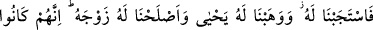

RABBİM!
BENİ YALNIZ BIRAKMA!
89. Zekeriyya’yı da (an). Hani o, Rabbine şöyle niyâz etmişti: “Rabbim! Beni
yalnız bırakma! Sen, vârislerin en hayırlısısın, (her şey sonunda senindir).”
90. Biz onun da duâsını kabul ettik ve ona Yahya’yı verdik; eşini de kendisi için
(çocuk doğurmaya) elverişli kıldık. Onlar (bütün bu peygamberler), hayır işlerinde
koşuşurlar, umarak ve korkarak bize yalvarırlardı; onlar, bize karşı derin saygı
içindeydiler.
91. Irzını iffetle korumuş olanı (Meryem’i de an.) Biz ona ruhumuzdan üfledik;
onu ve oğlunu cümle âlem için bir ibret kıldık.
“Zekeriyyâ’yı da” an. Yâni İsrailoğulları’na gönderilen peygamberlerden Zekeriyyâ
(a.s.)’ın haberini de an. “Hani o, Rabbine şöyle niyâz etmişti: “Rabbim! Beni yalnız
bırakma!” diye duâ etmişti.
Böyle bir ifâde, yasaklama anlamında değildir. Bir kölenin efendisine yalvarması
kabilinden tazarrû ve duâdır. Yâni, bana bir evlâd ver, beni çocuksuz olarak tek başıma
bırakma ki bana mirâsçı olsun.
Zekeriyyâ (a.s.) yüz yaşına, hanımı da doksan dokuz yaşına vardıklarında henüz onlara
çocuk ihsan edilmemişti. Zekeriyyâ (a.s.) Allah’tan kendisine yoldaş olacak, din ve
dünya işlerinde kendisini takviye edecek ve öldüğü vakit yerine geçecek bir çocuk ihsan
etmesini arzu ederek duâ etti. Sonra Mevlâsının irâdesine teslim olarak ve boyun eğerek
işi ona havâle etti ve şöyle dedi: “Sen, vârislerin en hayırlısısın” her şey sonunda
senindir. Ölenlerden sonra geride kalanların en hayırlısı sensin. Eğer bana, vârisim
olacak birini bahşetmezsen, sen bana yetersin.”
Bu ifade, Allah Teâlâ’ya övgüdür. Çünkü yaratılmışlar fânî olduktan sonra bâkî kalan
O’dur. “Göklerin ve yerin mîrâsı Allah’ındır.” (Âl-i İmrân, 3/180)